american-gods-jem-city
I have a new monitor - the official 7 inch Raspberry Pi touchscreen. It's a large upgrade - 480, 320px to 800, 480px. It is easier to work in with the larger screen. Everything fits. This has allowed me to work on grayscale paintings easier. When I was working on the small screen I was only producing line drawings. I am happy.
I have just spent a week down in Levin where I spent the majority of my time reading or painting. I have downloaded a bunch of artwork from artist Jem Yoshioka and have been remixing it. You can find her work at jemshed
I have also been reading a bunch of novels, this is thanks to the Kindle that I am borrowing from my brother. American Gods... Enjoy...
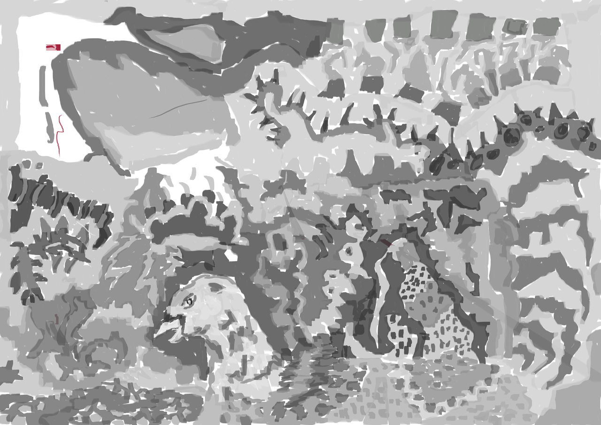
This was drawn after I finished reading American Gods. Reading the book gave me flashes of images that I was then able to paint. Of course my paintings look nothing like how I imagined.
This is the grayscale version and painted with the new 7 inch touch screen. Expect to see more grayscale layer and perhaps colour in the future.
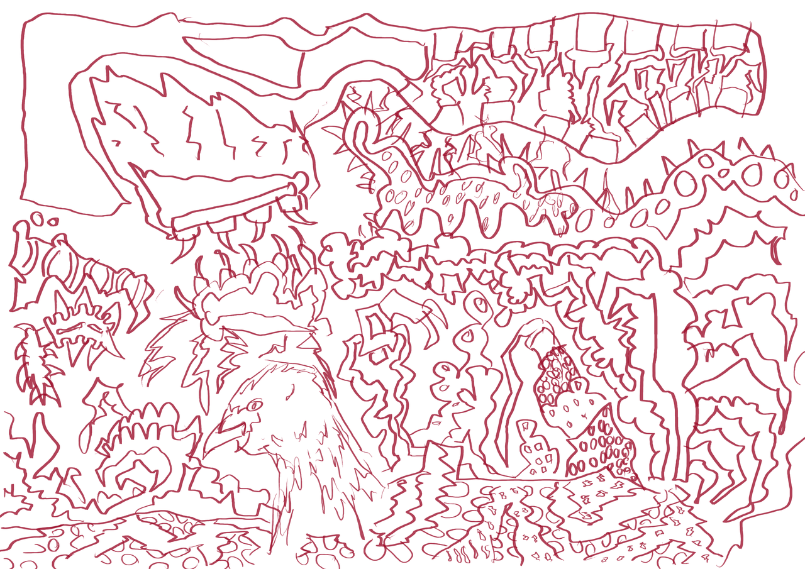
The line layer. The reference I used for this was a illustration of Jems for the bird. Everything else is imagination.
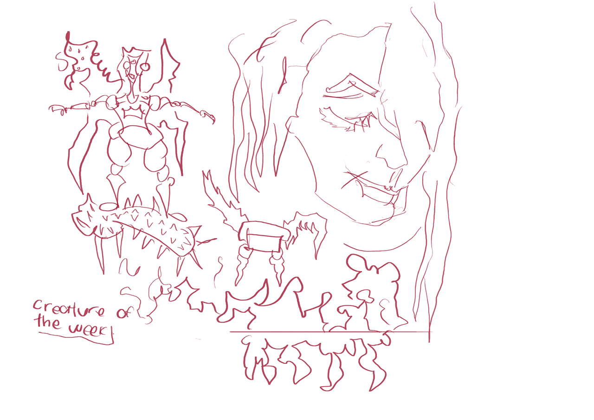
A portrait on the right and attempts on creature of the week. This is my Hello World with the new monitor.

More sketches inspired by Jems artwork. On Tuesday I visited my friend Justin and drew this. I had the reference on my old small monitor/pi. Having two portable touchscreen pis is handy but I need another two power packs. Currently I carry around two battery packs. This allows me to switch between the two packs, and keep them both charged up at night. MORE POWER basically.
I love the unicorns.
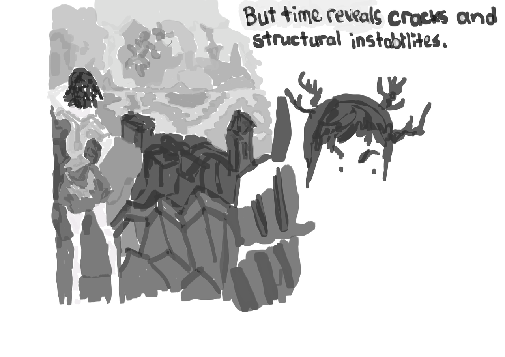
I loved Jems painting of the girl looking out over the city rooftops.
This grayscale layer took elements of her original. Areas
have been re-imagined such as the horizon line (something I like to make up and
just doodle away with).
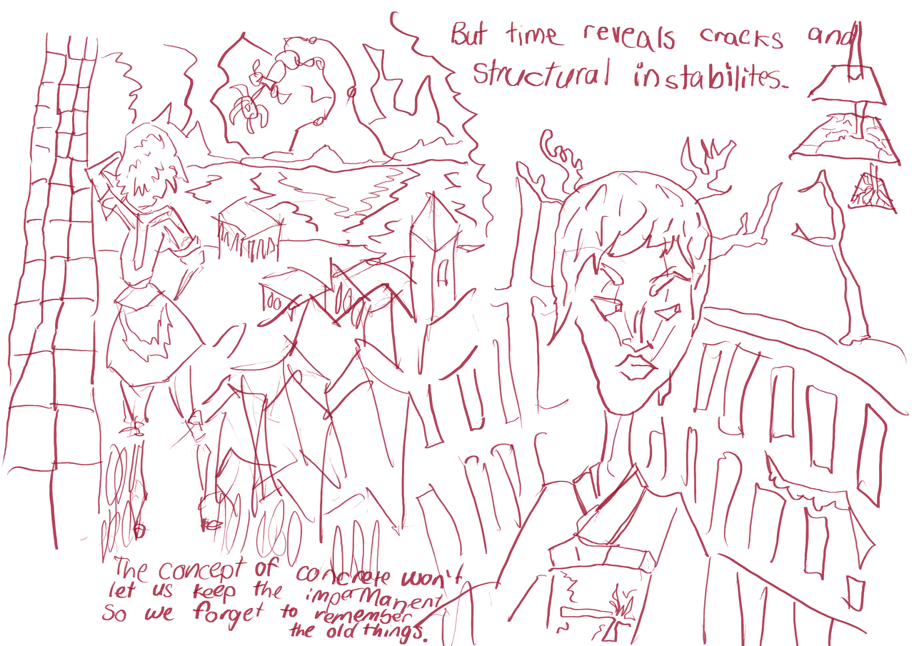
The line layer. There were areas that I didn't complete in the grayscale layer, such as the comic strip of the cracks in the earth (top right) and the face/ body of the Japanese woman.
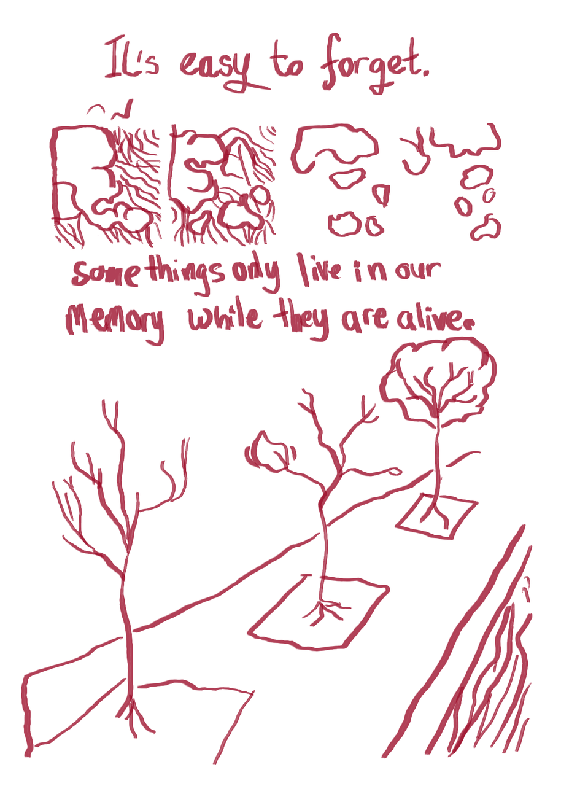
This was a remix I did of Jems City comic strip. It's mostly all done by tracing over - cheating compared to using the artwork as reference like I did on previous pieces. This stops me from remixing the piece so much, though I am tempted to redo these with more of a remix.
I love trees.
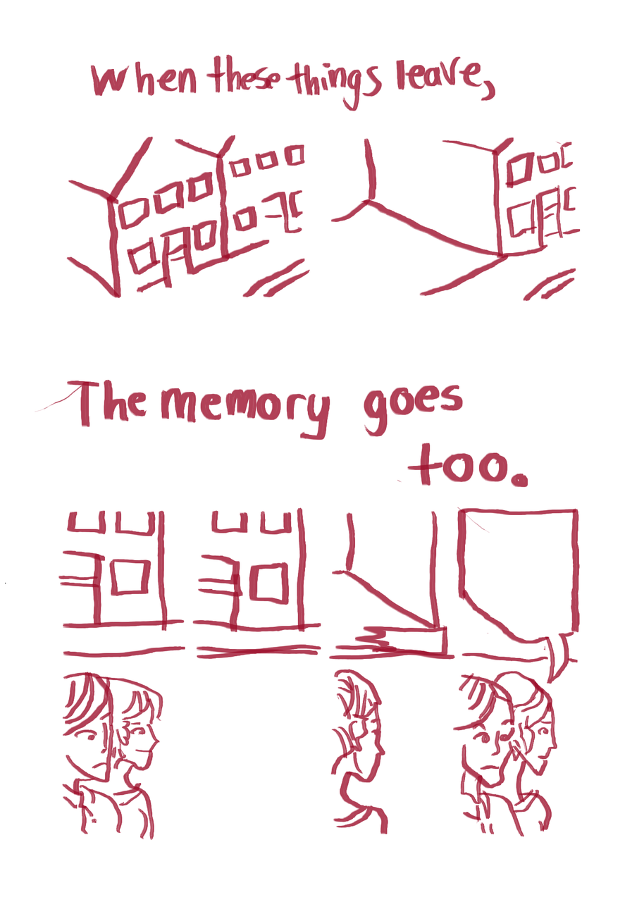
I stripped the borders off. The white space makes a nice border.
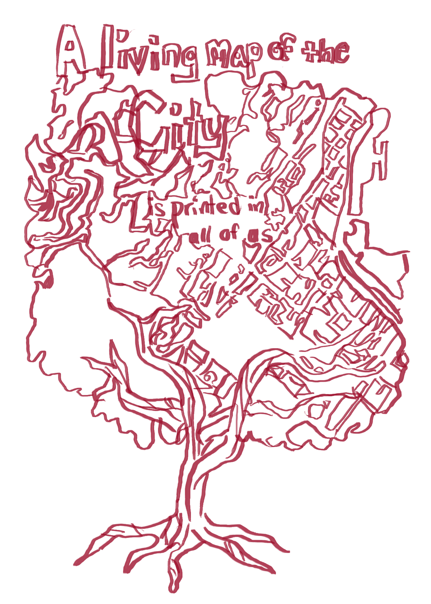
Where have I seen this before? That's right, Creative Commons ANZ used
a remix of this for their book. Go read it
A Quiet Revolution: Growing Creative Commons in Aotearoa New Zealand
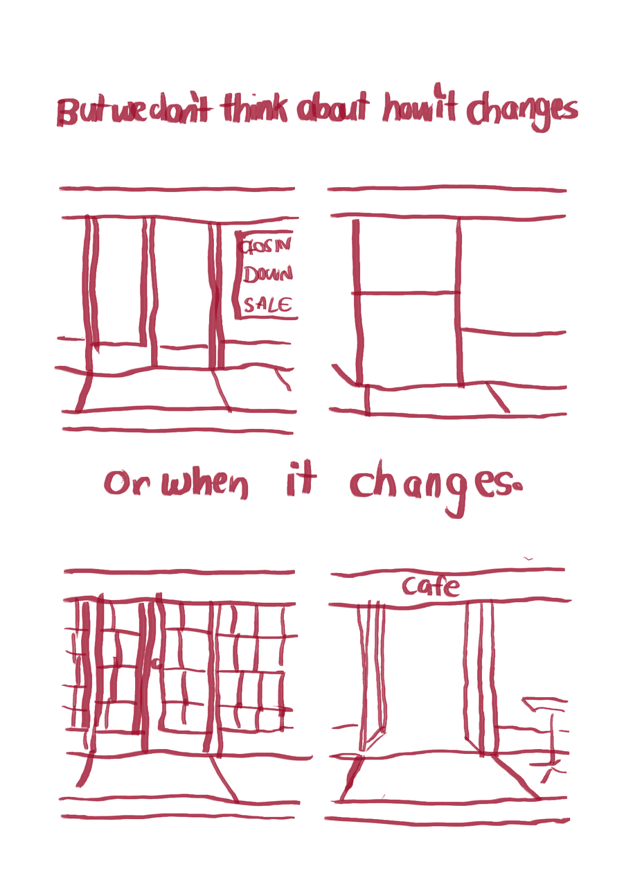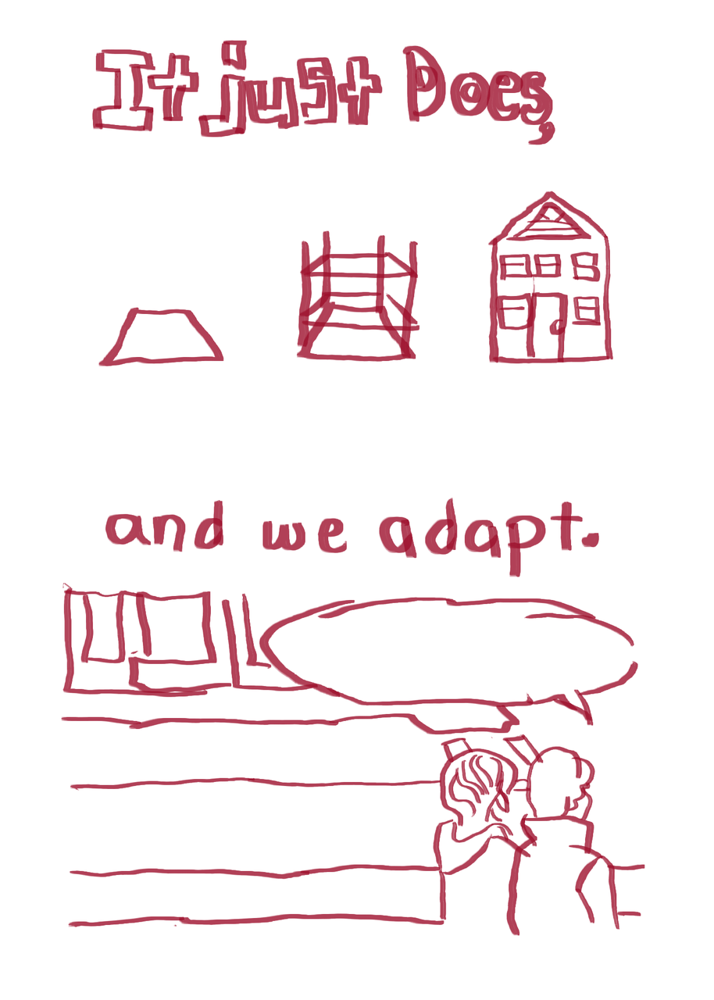 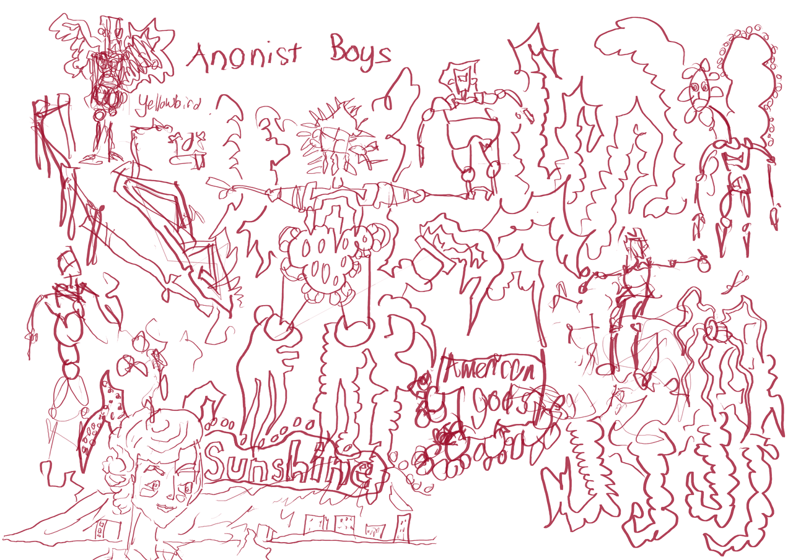
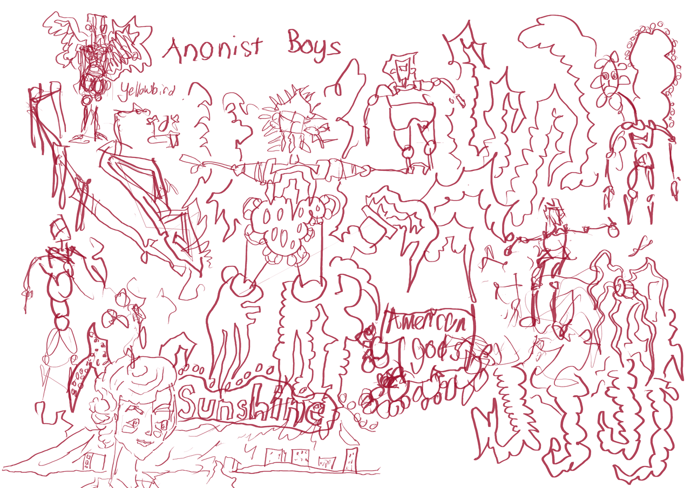
I have started reading Anansi Boys by Neil Gaiman so expect more artwork influenced by it.
Comments
Comments powered by Disqus